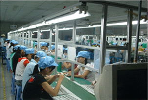

你是否也和他们一样迷茫过？
高考生：
高考生：上高中，分数一般，不能读理想大学；我不想为了上大学而上大学，白白耗费时间；可是工作，我能做什么？学习，我要学什么？困惑……技校毕业生：
当初读技校，就是为了早早学一门技术，能早日找到一份好工作，早一点自立，早一点为家里减轻负担。但毕业才发现，社会对技术的要求，远不是书本讲的那么简单……普工：
尽管没有学历和技能，但还是要工作的；日复一日，简单机械的重复没有任何技术含量的工作，拿着微乎其微的薪水，我的人生就此定格了吗?
你的成功还需要什么？
需要具备改变自己的 信心 和 勇气 ，进入IT行业的选择和坚持需要适合自己的 课程、老师、环境和管理。
你还在担心什么？
担心自己学不会?
没接触过、英语不好、数学不好等等，这些都会成为我们担心的理由。我们都有担心的 权利，但是更应该有改变的勇气。北大青鸟有专为高中生私人定制的专业计算机课程 ，最重要的是，这些课程都是从零基础开始的。-
担心学费贵？
世上没有贵与不贵，只有值与不值。知识不是物品，不是零食，而是可以一辈子为 生的技能。就像打游戏时的装备，你是希望要顶级装备，还是0级的新手装呢？北 大青鸟的课程虽不是国内最便宜的，但是无论从技术含量或是日后的就业上，都是 绝对物超所值的课程。 担心未来就业？
害怕学了以后找不到工作？看看IT技术的发展趋势吧，每天都在更新的尖端技术， 这样主流的行业最不缺少的就是工作机会。只要你掌握技能，就业根本就不是 问题！北大青鸟独有的三重就业体系及几万个就业资源在等着你。我们有17年的 教学经验和80万学员的就业成功案例。学IT,好工作，就读北大青鸟！
6大高端技术课程祝你成功
java课程web前段UI设计
大数据电商运营电商美工
数千人成功学子已是中流砥柱
北大青鸟最强名师团队
顶尖名师齐聚，教学总监领衔授课
支持你成为一个受人尊重的专业人才
-
1
拥有企业最急需的技术
全国最大的职业教育研究院团队。 依托北京大学优质雄厚的教育资源北大青鸟通过最专业的岗位分析，提取出企业最需要的技术技能，转化为专业知识，提供给青鸟学员。
-
2
拥有优秀的职业素养
专业技术与职业素养同发展提供多方位人才服务，循序渐进，满足不同阶段的职业需要，打造符合企业需求的个性化人才，国内职业导向训练课程首发。在职业发展中走得更远，发展更好。
-
3
全方位的就业服务
拥有总部专家、外聘行业专家、职业规划师、技术顾问、就业专员、社区技术专家等专业的老师进行全方位的就业服务，这也是北大青鸟就业服务的内在保障。
-
4
万家合作就业企业
北大青鸟积累的合作企业资源已经超过5万家为广大毕业学员提供了更有保障的就业资源，2013年度北大青鸟毕业学员成功入职5500余家合作企业从事IT技术工作。
-

-
5
科学的就业服务
就业服务体系不仅帮助学员解决基本的就业问题，更关注已就业学员未来的职业发展，针对不同阶段的学员提供有针对性、个性化的就业服务，协助支持青鸟学员的职场提升过程。